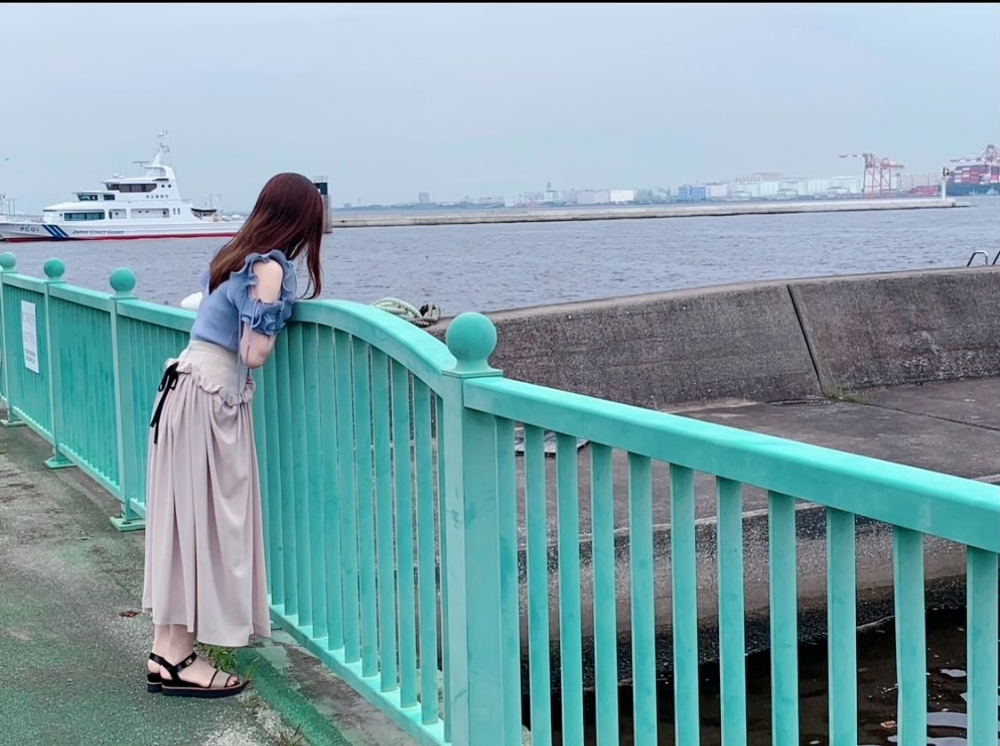

2021/0621Monさ〜ゆ〜Ready?つ(o・・o)
松村沙友理です
明日から横浜アリーナで
「さ〜ゆ〜Ready?」はじまります
どきどきです。
久しぶりの有観客ライブ
いくつかの制約はありますが
ライブが開催できること
心から感謝します。
２３日は配信もありますので
見守っていてくださいね
このライブを作るにあたって
あーだこーだと色々言っちゃったのに
その全てを形にしてくれた
優秀過ぎるスタッフさんにも
心から感謝しております
ギリギリまですみません。
メンバーもほんまに忙しいのにたくさんありがとう！
ほんまみんな素敵な子すぎて大好き...♡
ファンのみなさんにたのしんでもらえますように〜
白米様〜よろしくお願いしますね〜
EX大衆
Newtype
日刊スポーツ"坂道の火曜日"
CanCam
anan
出させていただいてます！
みてねー！！


2021/06/21 19:42
コメント(909)
おはようございまっちゅん！！
#松村沙友理乃木坂46卒業記念写真集 発売まであと10日
シコ踏んで腰痛がってるまちゅ可愛すぎました♡♡
今夜は、THE MUSIC DAYやね！！
乃木坂46のメンバーとしてテレビで歌うのはこれが最後みたいだね……( ᵒ̴̶̷᷄꒳ᵒ̴̶̷᷅ )
まちゅ思いっきり楽しんでね！！！
歌番組でまちゅが踊る姿しっかり目と心に焼き付けますね。
今日はどんな髪型かな？？
この前は、高めポニーテール本当にありがとうございまっちゅん！！
アイドルとしての最後の歌番組は、やはりツインテールかな？？
楽しみにしてますね♪♪
今日も宇宙で一番可愛いまちゅの笑顔満開の一日でありますように！！(o･ω-人)
たっかんより
こんにちは。
Instagramの更新ありがとうございます。
オフショットを見て楽しんでいます。
海の写真もいいですね。晴れた空、少し波のある海、シャツ、どの青色も素敵です。開放感があって楽しい感じが伝わってきます。
それと、宮崎のぎょうざ！美味しそうです。地鶏の炭火焼とチキン南蛮のイメージでしたが、今は"焼き餃子"がとても気になっています。2種類かな、多めにかな、、やっぱり気になります。笑
いつか宮崎の海とお店に行ってみたいです。
それでは、また。
o(^-^)o
Instagramの更新ありがとうございます。
オフショットを見て楽しんでいます。
海の写真もいいですね。晴れた空、少し波のある海、シャツ、どの青色も素敵です。開放感があって楽しい感じが伝わってきます。
それと、宮崎のぎょうざ！美味しそうです。地鶏の炭火焼とチキン南蛮のイメージでしたが、今は"焼き餃子"がとても気になっています。2種類かな、多めにかな、、やっぱり気になります。笑
いつか宮崎の海とお店に行ってみたいです。
それでは、また。
o(^-^)o
今日放送されるMUSIC DAYの坂道選抜のメンバーめっちゃ気になるね
大好きだよー！！
今まで本当にありがとう。そしてお疲れ様。これからもずっと応援しています。
今まで本当にありがとう。そしてお疲れ様。これからもずっと応援しています。
こんにちは！
初コメ失礼します〜！
世界で1番推してる方は田村真佑ちゃん！な中学女子でございます♡
顔も可愛いし歌もだんすもうまいし肌めっちゃ白いし目がおっきいし大好きです！憧れてもいます！
乃木坂のラジオ聴ける時は全部聴いてるのですが、真佑ちゃんのラジオがだんとつ一番に面白いです！
すっごいコミュ力、コメント力がたかいし声がかわいいのも大好き！！
だからテスト期間中とかで時間がないときはレコメンだけ聴いてます！！
お金ないからミーグリとかはできないけど大好きです〜♥
あとcgtvでガルル歌ったときのでこだしめっちゃかわいかった！
テレビの前でかわいー！！って叫んだよん♡笑
永遠に応援してます！真佑ちゃんの明るくてやさしいところ大好きです！
ばいばいだにゃん♡
初コメ失礼します〜！
世界で1番推してる方は田村真佑ちゃん！な中学女子でございます♡
顔も可愛いし歌もだんすもうまいし肌めっちゃ白いし目がおっきいし大好きです！憧れてもいます！
乃木坂のラジオ聴ける時は全部聴いてるのですが、真佑ちゃんのラジオがだんとつ一番に面白いです！
すっごいコミュ力、コメント力がたかいし声がかわいいのも大好き！！
だからテスト期間中とかで時間がないときはレコメンだけ聴いてます！！
お金ないからミーグリとかはできないけど大好きです〜♥
あとcgtvでガルル歌ったときのでこだしめっちゃかわいかった！
テレビの前でかわいー！！って叫んだよん♡笑
永遠に応援してます！真佑ちゃんの明るくてやさしいところ大好きです！
ばいばいだにゃん♡
まっちゅんさん、たった今日テレミュージックディ見ましたよ。
メンバーと歌う最後になりますが、まっちゅんらしく笑顔で歌われてましたね。
お疲れ様でした、後わずかの乃木坂在籍ですが、最後までメンバーとの思い出を作って下さいね。
ファンとしてはこれも最後になると思いますが、ニコ生の放送出演を楽しみに待ってますね。
(^.^)
メンバーと歌う最後になりますが、まっちゅんらしく笑顔で歌われてましたね。
お疲れ様でした、後わずかの乃木坂在籍ですが、最後までメンバーとの思い出を作って下さいね。
ファンとしてはこれも最後になると思いますが、ニコ生の放送出演を楽しみに待ってますね。
(^.^)
さゆりんご！
「THEMUSICDAY」見たよー
とってもとっても素敵だった！！
最高だった！
全部が綺麗で可愛くてカッコイイさゆりんご！
大大大好き！
これが最後だなんて思えないなぁー。
でも全力で応援したよ！大好きっていっぱいの気持ち！
届いたらいいのになー。
「THEMUSICDAY」見たよー
とってもとっても素敵だった！！
最高だった！
全部が綺麗で可愛くてカッコイイさゆりんご！
大大大好き！
これが最後だなんて思えないなぁー。
でも全力で応援したよ！大好きっていっぱいの気持ち！
届いたらいいのになー。
まっちゅん、THE MUSIC DAY観ましたよ。
ラストパフォーマンス、お疲れさまでした！
まっちゅんは楽しめたかな？
楽しめているといいなぁって思いながら見守ってました。
とっても素敵でしたよ
もうパフォーマンスを観られないのは寂しいけれど、卒業ライブ後もこうして歌番組に出演してくれていた事が嬉しいし、幸せです
まっちゅん、ありがとう
ラストパフォーマンス、お疲れさまでした！
まっちゅんは楽しめたかな？
楽しめているといいなぁって思いながら見守ってました。
とっても素敵でしたよ
もうパフォーマンスを観られないのは寂しいけれど、卒業ライブ後もこうして歌番組に出演してくれていた事が嬉しいし、幸せです
まっちゅん、ありがとう
タイムテーブルを見たら
PM
ず
《
《
《
ぐるぐるカーテンは、市來玲奈さんも歌ってパフォーマンスして、とっても良かったよ
いい意味で全く、違和感なかった
西野さんは、最初に出てたけど…
サプライズもあるって羽鳥さんが言ってたから
まさか
紙吹雪で、ファンからの
みんな、嬉しかったね
さゆりんも、今日は髪の毛を下ろしてて
可愛かった
パフォーマンスが終わって、ちょっと淋しくなった
《坂道センター選抜》も良かったよ
乃木坂
櫻坂
日向坂
《おいでシャンプー&シンクロニシティ》
そして、Instagramにも
ガチャリンコ
ガチャリンゴ
浴衣姿も清楚で、涼しげで
可愛いよ
ドラマで仲居さん役をやるから、それと重なって見えました
乃木恋のさゆりんの思い出ストーリー
後、
今日は、ゆっくり休んでね
おやすみぃ〜〜良い夢を
まちゅこんばんは〜！
THE MUSIC DAY観たよ、ラストパフォーマンス本当にお疲れ様！
3曲ともすごくよかった、ぐるカーは踊ってる姿が愛らしくて、インフルエンサーはキレキレでかっこよくて力強いまちゅにハッとして
ごめんねFingers Crossedも最初のさくらちゃんとのツーショットから、ラストのワンカットまで最高だった！やり切ったね
ファンの方からのメッセージが詰まった紙吹雪を持って嬉しそうに笑うまちゅがとっても可愛くて、今日も宇宙一可愛いお姫様でした☺︎
観ててやっぱり歌って踊るまちゅが大好きだな〜って思いました
10年の集大成とっても素敵だったよ
いつもパフォーマンスで力をくれてありがとうございました
残り10日！たくさん素敵な思い出作ってね(^^)
一緒に最後まで全力で駆け抜けていこう〜！
今日も大好き
THE MUSIC DAY観たよ、ラストパフォーマンス本当にお疲れ様！
3曲ともすごくよかった、ぐるカーは踊ってる姿が愛らしくて、インフルエンサーはキレキレでかっこよくて力強いまちゅにハッとして
ごめんねFingers Crossedも最初のさくらちゃんとのツーショットから、ラストのワンカットまで最高だった！やり切ったね
ファンの方からのメッセージが詰まった紙吹雪を持って嬉しそうに笑うまちゅがとっても可愛くて、今日も宇宙一可愛いお姫様でした☺︎
観ててやっぱり歌って踊るまちゅが大好きだな〜って思いました
10年の集大成とっても素敵だったよ
いつもパフォーマンスで力をくれてありがとうございました
残り10日！たくさん素敵な思い出作ってね(^^)
一緒に最後まで全力で駆け抜けていこう〜！
今日も大好き
やっぱり軍団長の笑顔は、この世界で一番眩しい笑顔です。
卒業おめでとうは言いません、待っています。
これからも輝いていてください!
卒業おめでとうは言いません、待っています。
これからも輝いていてください!
まっちゅん (´∇｀)
「THE MUSIC DAY」
結成10周年メドレー3曲
そして
まっちゅんの ラストパフォーマンス
（最後の感じがぜんぜんしないけど…）
めちゃくちゃ超～可愛かったよ～
そして めちゃくちゃ格好良かった～
♪ヽ(´▽｀)/
サプライズのメッセージ紙吹雪は
ビックリだったけど 素敵でしたね～
(*´∇｀*)
（久しぶりの市来先生も 頑張ってたね～）
(*^^*)
まだ どれくらいメンバーと過ごせる時間が
あるのか わからないけど 最後まで
みんなと 素敵な時間を過ごしてね～
゜゜(´O｀)°゜
それから 英監督との対談ラジオ
聴いたよ～ なかなか聞けない感じの
トークが おもしろかったよ～
(≧▽≦)
そして 出演ドラマも 必ず観るね！
まだ 出来る限りの ちょこちょこ たまに
コメントしま～す
応援してま～す。(´∇｀)ゞ
お天気が 不安定過ぎるから……
くれぐれも 気を付けてね
「THE MUSIC DAY」
結成10周年メドレー3曲
そして
まっちゅんの ラストパフォーマンス
（最後の感じがぜんぜんしないけど…）
めちゃくちゃ超～可愛かったよ～
そして めちゃくちゃ格好良かった～
♪ヽ(´▽｀)/
サプライズのメッセージ紙吹雪は
ビックリだったけど 素敵でしたね～
(*´∇｀*)
（久しぶりの市来先生も 頑張ってたね～）
(*^^*)
まだ どれくらいメンバーと過ごせる時間が
あるのか わからないけど 最後まで
みんなと 素敵な時間を過ごしてね～
゜゜(´O｀)°゜
それから 英監督との対談ラジオ
聴いたよ～ なかなか聞けない感じの
トークが おもしろかったよ～
(≧▽≦)
そして 出演ドラマも 必ず観るね！
まだ 出来る限りの ちょこちょこ たまに
コメントしま～す
応援してま～す。(´∇｀)ゞ
お天気が 不安定過ぎるから……
くれぐれも 気を付けてね
THE MUSIC DAY観たよ。
曲の最後のアップがすばらしかった！練習した？
あの言葉を贈らせてもらいたいね。
いい顔だ！
曲の最後のアップがすばらしかった！練習した？
あの言葉を贈らせてもらいたいね。
いい顔だ！
沙友理ちゃん。こんばんは！
船頭です。
インスタ更新ありがとうございます！そして最後の音楽番組となるTHE MUSIC DAY出演お疲れさまでした！
市來アナとの久しぶりのパフォーマンスや、メッセージ入り紙吹雪の演出もあってとても良い最後になったのではないでしょうか。あの紙吹雪は沙友理ちゃんの卒コンのときに横アリのロビーで集められていたものですが、こういう形で使われるものだとは思っていなかったのでファンにとっても嬉しいサプライズになりました。
それにしてもインスタの浴衣の写真、可愛いですね。
それではまた。
沙友理ちゃん。今日も宇宙で一番かわいいよ♫
船頭です。
インスタ更新ありがとうございます！そして最後の音楽番組となるTHE MUSIC DAY出演お疲れさまでした！
市來アナとの久しぶりのパフォーマンスや、メッセージ入り紙吹雪の演出もあってとても良い最後になったのではないでしょうか。あの紙吹雪は沙友理ちゃんの卒コンのときに横アリのロビーで集められていたものですが、こういう形で使われるものだとは思っていなかったのでファンにとっても嬉しいサプライズになりました。
それにしてもインスタの浴衣の写真、可愛いですね。
それではまた。
沙友理ちゃん。今日も宇宙で一番かわいいよ♫
長年お疲れ様でした。
結成から、まっつんの事応援していました。
さ〜ゆ〜Ready?つ(○・・○） ですね＼(^^)／
本当に、お疲れ様でした(o^^o)
結成から、まっつんの事応援していました。
さ〜ゆ〜Ready?つ(○・・○） ですね＼(^^)／
本当に、お疲れ様でした(o^^o)
まっちゅんが乃木坂に居てくれて
本当に良かった！前に進む判断をされたのですね！
初期から応援してて良かった！！
そしてこれからも応援してる！！！✧*｡٩(ˊᗜˋ*)و✧*｡
本当に良かった！前に進む判断をされたのですね！
初期から応援してて良かった！！
そしてこれからも応援してる！！！✧*｡٩(ˊᗜˋ*)و✧*｡
おはようございます！
ミュージックデイ観ましたよ〜
まっちゅん、綺麗だった
笑顔もとっても輝いてた
私にとってのNo. 1アイドルは
間違いなく、松村沙友理さん、あなたです！
好きだー
ミュージックデイ観ましたよ〜
まっちゅん、綺麗だった
笑顔もとっても輝いてた
私にとってのNo. 1アイドルは
間違いなく、松村沙友理さん、あなたです！
好きだー
さゆりん、おはようございます
今日も、がんばってね
THEMUSICDAY観たよ
さゆりんの、しなやかな、かっこいい
ダンス良かったよ、好き最高だよ
サプライズ紙吹雪凄かったね、生田さんと
喜んでいたね、よかったね
ラストなんて、思えない、思わないよ
寂しくなるから、やだよさゆりん
魅力ありすぎだよ、さゆりん
乃木坂工事中楽しみに、しているね
インスタ更新ありがとう、可愛いね
さゆりんには、ありがとう感謝しかないよ
身体に気をつけてね
またね大好き過ぎる❤️❤️❤️さゆりん可愛い
可愛い可愛い可愛いよ
今日も、がんばってね
THEMUSICDAY観たよ
さゆりんの、しなやかな、かっこいい
ダンス良かったよ、好き最高だよ
サプライズ紙吹雪凄かったね、生田さんと
喜んでいたね、よかったね
ラストなんて、思えない、思わないよ
寂しくなるから、やだよさゆりん
魅力ありすぎだよ、さゆりん
乃木坂工事中楽しみに、しているね
インスタ更新ありがとう、可愛いね
さゆりんには、ありがとう感謝しかないよ
身体に気をつけてね
またね大好き過ぎる❤️❤️❤️さゆりん可愛い
可愛い可愛い可愛いよ
沙友理ちゃん
おはようございます
昨日のTHE MUSIC DAY観ました
沙友理ちゃんのアイドルのラストパフォーマンスこの目に焼き付けましたよ
サプライズもあって良かったね
ぐるぐるカーテンも出来て良かった
インフルエンサーかっこよかったよ
ごめんねFingers crossedでも最後沙友理ちゃんを映してくれて嬉しかったよ
メッセージ拾って喜んでるからあげ姉妹も素敵でした
お疲れ様でした
沙友理ちゃんは本当に素敵で凄い最高のアイドル
本当にありがとう
これからは松村沙友理ちゃんを応援します
今日もがんばりまっちゅん
おはようございます
昨日のTHE MUSIC DAY観ました
沙友理ちゃんのアイドルのラストパフォーマンスこの目に焼き付けましたよ
サプライズもあって良かったね
ぐるぐるカーテンも出来て良かった
インフルエンサーかっこよかったよ
ごめんねFingers crossedでも最後沙友理ちゃんを映してくれて嬉しかったよ
メッセージ拾って喜んでるからあげ姉妹も素敵でした
お疲れ様でした
沙友理ちゃんは本当に素敵で凄い最高のアイドル
本当にありがとう
これからは松村沙友理ちゃんを応援します
今日もがんばりまっちゅん
マジか、、、
おはよう
衝撃的なニュースと暑苦しさで
昨夜は眠れませんでした
まだ頭がパニクってて
コメントもうまくまとめられません
でも乃木坂メンバーとして
活動した期間が人生の糧となって
くれることを願ってます...
桃、食べよう
おはよう
衝撃的なニュースと暑苦しさで
昨夜は眠れませんでした
まだ頭がパニクってて
コメントもうまくまとめられません
でも乃木坂メンバーとして
活動した期間が人生の糧となって
くれることを願ってます...
桃、食べよう
沙友理さん、おはよう！
『TOKYO SPEAKEASY』を聴きました。
握手会が本当に(体力的に？)大変だと強調していたのには驚きでした。
勿論、応援の言葉を直接聞けて嬉しいとも言ってくれていましたが・・・
今まで、そこまでの想いに気付いてあげられずにごめんね。
それでも、大切に保管するようにアナウンスされている・保護色の握手券は、沙友理さんとの握手に使いたい気持ちに全く変わりありませんよ！
ミーグリでお伝えした通り、卒業生に軍団ライブ参加をオファーし実現させたのは、他でもない沙友理さんだから、卒業してもオファーがあったらOKサインを出してくださいね！
いやいや、自身から手を挙げて欲しいな。
全握チケットは対象メンバーを限定していないので振替とかの制度はないけど、大切に大切に保管している、私、史上最高枚数の握手券は、勿論今でも、沙友理さんの為だけに使用する予定だからね！(笑)
沙友理さんの乃木坂卒業が日に日に近づいて来ていますが、私の「乃木坂の沙友理さん卒業の実感」は、まだまだ感じてられていませんよーー！！
『TOKYO SPEAKEASY』を聴きました。
握手会が本当に(体力的に？)大変だと強調していたのには驚きでした。
勿論、応援の言葉を直接聞けて嬉しいとも言ってくれていましたが・・・
今まで、そこまでの想いに気付いてあげられずにごめんね。
それでも、大切に保管するようにアナウンスされている・保護色の握手券は、沙友理さんとの握手に使いたい気持ちに全く変わりありませんよ！
ミーグリでお伝えした通り、卒業生に軍団ライブ参加をオファーし実現させたのは、他でもない沙友理さんだから、卒業してもオファーがあったらOKサインを出してくださいね！
いやいや、自身から手を挙げて欲しいな。
全握チケットは対象メンバーを限定していないので振替とかの制度はないけど、大切に大切に保管している、私、史上最高枚数の握手券は、勿論今でも、沙友理さんの為だけに使用する予定だからね！(笑)
沙友理さんの乃木坂卒業が日に日に近づいて来ていますが、私の「乃木坂の沙友理さん卒業の実感」は、まだまだ感じてられていませんよーー！！
おはようございます(*´ｰ｀)ゞ
インスタ更新ありがとう
淡い緑色の浴衣素敵ですね
涼やかなまとめ髪が
浴衣との雰囲気に合ってて
さゆりんとてもかわいいです
写真集のオフショットありがとう
ガチャ子さんの写真ありがとう
THE MUSIC DAY 観ましたよ
ぐるぐるカーテン インフルエンサー
ごめんねFingers crossed
かわいらしさからかっこよさと
さゆりんの魅力いっぱいのパフォーマンス
とても素敵でキラキラ輝いていました
ゆる巻きの髪型は大人かわいかったです
最後の優しく温かい笑み
胸に沁みました
乃木坂46として歌った最後のパフォーマンス
いっぱい楽しんだかな
さゆりんの歌って踊っている姿大好きです
いつかまた観られるといいな
それではまたね
さゆりんp(´▽`o)ﾉﾞ ﾌｧｲﾄｫ〜♪
インスタ更新ありがとう
淡い緑色の浴衣素敵ですね
涼やかなまとめ髪が
浴衣との雰囲気に合ってて
さゆりんとてもかわいいです
写真集のオフショットありがとう
ガチャ子さんの写真ありがとう
THE MUSIC DAY 観ましたよ
ぐるぐるカーテン インフルエンサー
ごめんねFingers crossed
かわいらしさからかっこよさと
さゆりんの魅力いっぱいのパフォーマンス
とても素敵でキラキラ輝いていました
ゆる巻きの髪型は大人かわいかったです
最後の優しく温かい笑み
胸に沁みました
乃木坂46として歌った最後のパフォーマンス
いっぱい楽しんだかな
さゆりんの歌って踊っている姿大好きです
いつかまた観られるといいな
それではまたね
さゆりんp(´▽`o)ﾉﾞ ﾌｧｲﾄｫ〜♪
さゆりん
THE MUSIC DAY、お疲れ様でした。
いつも時間の流れの感覚が、時間の流れの事実に追いつきません。
そして大園さんの発表もあり、
乃木坂が大きな節目に差し掛かっているのはすごく感じます。
マツミンや軍団、命の真実など類稀なプロデュース能力ですし
OVERTUREの「のぎのぎー」は唸りました！( ^ω^ )
さゆりんは不世出のアイドルさんだったんだなぁとつくづく思います。
そしてそれをリアルタイムで見れたのが本当に奇跡でした。
ライブではあたりまえのようにさゆりんがいて、いつも笑わせてくれて
今の乃木坂らしさを作ってくれて。
だからたくさん感謝してます。
さゆりんのことだからこれからも奇抜な発想で楽しませてくれそうですし、
生涯アイドルのさゆりんをずっと応援したいなと思います。
あと、写真集の発売も楽しみにしてます！
THE MUSIC DAY、お疲れ様でした。
いつも時間の流れの感覚が、時間の流れの事実に追いつきません。
そして大園さんの発表もあり、
乃木坂が大きな節目に差し掛かっているのはすごく感じます。
マツミンや軍団、命の真実など類稀なプロデュース能力ですし
OVERTUREの「のぎのぎー」は唸りました！( ^ω^ )
さゆりんは不世出のアイドルさんだったんだなぁとつくづく思います。
そしてそれをリアルタイムで見れたのが本当に奇跡でした。
ライブではあたりまえのようにさゆりんがいて、いつも笑わせてくれて
今の乃木坂らしさを作ってくれて。
だからたくさん感謝してます。
さゆりんのことだからこれからも奇抜な発想で楽しませてくれそうですし、
生涯アイドルのさゆりんをずっと応援したいなと思います。
あと、写真集の発売も楽しみにしてます！
ずっとさゆりちゃんを応援してます
頑張ってください
大好きです!!
頑張ってください
大好きです!!
今日の乃木中も楽しみだワン
the music dayの紙吹雪きれいでしたね～♪
先日の卒コンのときに募集してたんですけど、紙吹雪に私もメッセージを記入してたのでちょっと感慨深かったです(｡･ω･｡)
先日の卒コンのときに募集してたんですけど、紙吹雪に私もメッセージを記入してたのでちょっと感慨深かったです(｡･ω･｡)
沙友理さん、こんばんは！
確か以前、キャプテン・真夏さんは、自ら「４６歳まで続ける！」なんて言っていたことがあった思うけど、
沙友理さんは自ら言うのではなく、沙友理さんが尊敬して止まない秋元康先生から「46歳までアイドルできるよ。」と言って貰っていたんですね。
それが秋元先生の言葉だから、重いし、嬉しいね！
それを『TOKYO SPEAKEASY』での英勉監督とトークで聴けたんだけど・・・
４６歳まで続けると言えたり、４６歳までできると言って貰ったりするメンバーが他に出てくるかと思うとなかなか難しいよねぇ！？
そう考えても、沙友理さんは正に‘‘アイドル中のアイドル’’だねーー！！
ヤッパリ、またまた、
「もっと観ていた～～い！」って、思っちゃったよーー！！
確か以前、キャプテン・真夏さんは、自ら「４６歳まで続ける！」なんて言っていたことがあった思うけど、
沙友理さんは自ら言うのではなく、沙友理さんが尊敬して止まない秋元康先生から「46歳までアイドルできるよ。」と言って貰っていたんですね。
それが秋元先生の言葉だから、重いし、嬉しいね！
それを『TOKYO SPEAKEASY』での英勉監督とトークで聴けたんだけど・・・
４６歳まで続けると言えたり、４６歳までできると言って貰ったりするメンバーが他に出てくるかと思うとなかなか難しいよねぇ！？
そう考えても、沙友理さんは正に‘‘アイドル中のアイドル’’だねーー！！
ヤッパリ、またまた、
「もっと観ていた～～い！」って、思っちゃったよーー！！
ありがとう。まちゅ(*ゝω・)ﾉ♥歴史に残る最高のさーゆーレディーライブでした。特にピンのさーゆーレディー大好きです。早くDVD欲しい。ずっと愛してます(*ゝω・)ﾉ♥大丈夫。あなたなら芸能界で大成功します。好きな事をいっぱい楽しんで仕事しちゃってください。お願いします(*￣∇￣*)
昨日のファンからの紙吹雪メッセージ
さゆりんへのメッセージは見付けましたか?
そして、《
後
昨日、
【もぅすぐ、発売日です】と
とっても楽しみだよ
そんな今日は《
とてもいい楽曲
その後、ガールズルールのMVも観て
さゆりんと奈々未さんが、喧嘩した後が気になってしまった
夜のプールサイドで、
お店でアイスも食べてたから
殆ど知らなかったデビュー当時からインフルエンサーぐらいまでの乃木坂
勿論、最近のMVも観てるよ
今日深夜は《
《松村が設楽王決定戦に挑む
（番組表のタイトル）
こちらも、どんな展開になるのか
もの凄く楽しみです
さゆりん、
泣いてしまうんじゃないか
日曜日の深夜は、息子もなかなか寝ようとしないよ
《乃木坂工事中》を観たいから
話は変わりますが…
桃ちゃんのブログを読みました
淋しいなぁ…卒業&引退だなんて
かなり、
これからの頑張りをもっと観たかったな
でも、変わらずこれから先も
ではでは、《乃木坂工事中》を観る為に
乃木坂
沙友理ちゃんこんばんは〜(∩´∀｀)∩
またコメントしに来ました〜(*´ `*)
まずは昨日の｢THE MUSIC DAY｣の生放送お疲れ様でした(´ω`)
沙友理ちゃんの乃木坂46としての最後の歌番組での姿しっかりと目に焼き付けました( ´ ` )
ごめんねFingers crossedの表情一つ一つがとっても素敵でしたよ(*´ `*)
最後の指をクロスしている時の沙友理ちゃんの優しい表情が特に好きですよ(/ω＼*)
紙吹雪のメッセージはいくちゃんと沙友理ちゃんへのメッセージを見つけられたのかな？笑
2人のやり取りも見ていてぐっと来ました( ´ ` )
やっぱり沙友理ちゃんは僕にとって世界一のアイドルです(^^)
卒業まで後10日を切った実感は正直ないですが残りの期間悔いなく過ごして下さいね(*´ `*)
またコメントしますね〜(´ω｀*)
べっつん
またコメントしに来ました〜(*´ `*)
まずは昨日の｢THE MUSIC DAY｣の生放送お疲れ様でした(´ω`)
沙友理ちゃんの乃木坂46としての最後の歌番組での姿しっかりと目に焼き付けました( ´ ` )
ごめんねFingers crossedの表情一つ一つがとっても素敵でしたよ(*´ `*)
最後の指をクロスしている時の沙友理ちゃんの優しい表情が特に好きですよ(/ω＼*)
紙吹雪のメッセージはいくちゃんと沙友理ちゃんへのメッセージを見つけられたのかな？笑
2人のやり取りも見ていてぐっと来ました( ´ ` )
やっぱり沙友理ちゃんは僕にとって世界一のアイドルです(^^)
卒業まで後10日を切った実感は正直ないですが残りの期間悔いなく過ごして下さいね(*´ `*)
またコメントしますね〜(´ω｀*)
べっつん
沙友理さん、こんばんは！
昨夜の生歌TV番組ラスト出演、お疲れ様でした！
・身を清め背筋を正して瞬き厳禁でリアタイに臨みました。
・「乃木坂の沙友理さん」の素敵なラストパフォーマンスを目に、耳に、心に、しっかりと焼き付けさせて貰いました。
「今日が大好きなメンバーと歌える最後の日なので、楽しんでパフォーマンスさせていただきたいなと思います。」との事前コメント通りに、メンバーとの最後のステージ、有終の美を見事に’笑顔で‘飾りましたね！！！
サプライズ演出「ファンから10周年を祝うメッセージの紙吹雪」も粋な計らいでしたね！！
直後の「からあげ姉妹」妹の生ちゃんとのイチャイチャ、ワチャワチャなシーンも映し出されて、胸が熱くなりました！
乃木坂は、からあげ姉妹は、沙友理さんは、「本当に素敵だなぁ！」と改めてしみじみと感動させられました。
ありがとう！ありがとう！ありがとう！
この日の「THE MUSIC DAY」も、私の永久保存版録画リストに加わりました。(笑)
昨夜の生歌TV番組ラスト出演、お疲れ様でした！
・身を清め背筋を正して瞬き厳禁でリアタイに臨みました。
・「乃木坂の沙友理さん」の素敵なラストパフォーマンスを目に、耳に、心に、しっかりと焼き付けさせて貰いました。
「今日が大好きなメンバーと歌える最後の日なので、楽しんでパフォーマンスさせていただきたいなと思います。」との事前コメント通りに、メンバーとの最後のステージ、有終の美を見事に’笑顔で‘飾りましたね！！！
サプライズ演出「ファンから10周年を祝うメッセージの紙吹雪」も粋な計らいでしたね！！
直後の「からあげ姉妹」妹の生ちゃんとのイチャイチャ、ワチャワチャなシーンも映し出されて、胸が熱くなりました！
乃木坂は、からあげ姉妹は、沙友理さんは、「本当に素敵だなぁ！」と改めてしみじみと感動させられました。
ありがとう！ありがとう！ありがとう！
この日の「THE MUSIC DAY」も、私の永久保存版録画リストに加わりました。(笑)
あと数日で卒業ということで、あらためてこれまで楽しい時間を与えてくれたことに感謝したいね。
まずグループ内のことでいえば、いわゆる「お姉さんメンバー」のひとりとして、いまにつづく乃木坂の雰囲気をつくってくれたね。黎明期はメンバーの年齢が当然のことながら若く、「御三家」のような年長者が人気を牽引していたわけだけれども、こうした年上で人気のあるメンバーが組織にピリピリした雰囲気をもたらすようであったなら、そして心の揺れ動きやすい年代の年下メンバーのケアをしてくれていなかったら、生駒ちゃんやいくちゃん、そしてあすかなどがのびのびと才能を発揮することもできなかっただろうね。逆に当初はダンスや音楽の経験があまりなかったお姉さんメンバーたちもまた経験があった年下メンバーに付いていっていたというところもあり、それが乃木坂の奇跡につながったと確信している。
それから時を経て、さゆりんご軍団を結成し軍団長として活躍の場をつくりそして与えてくれたのも、自分たちで考えて楽しみながら活動するという新しい文化を乃木坂にもたらしたね。
まちゅ個人のこととしては、まずは『乃木坂って、どこ?』『乃木坂工事中』で名言、迷言や好演で盛り上げてながらも、将来の見通しがはっきりと定まらないままにモデルやバラエティ番組など外仕事を続けていっていたように見受けられたけど、なんといっても『賭ケグルイ season 2』の夢見弖ユメミ役としての活躍は大きかったのかな。まちゅは演技で別人物になりきったり、さゆりんご軍団のようないわゆるプロレスでのギミックのようなものが得意なのだろうね。
そうした活躍とともにここ数年のダンスパフォーマンスに取り組む姿勢も以前よりもずっと厳しさが出てきて、後輩たちへのひとつのお手本になるのではないかな。
これからは今まで以上に体と心のケアを気にかけつつ、他の卒業したメンバーたちと切磋琢磨しつつ活躍することを期待したいね。
残された時間は後輩たちに会う機会があれば、あらためてたくさん話しかけてほしいし、後輩たちも勇気を出してたくさんまちゅに話しかけてもらいたいね。
まずグループ内のことでいえば、いわゆる「お姉さんメンバー」のひとりとして、いまにつづく乃木坂の雰囲気をつくってくれたね。黎明期はメンバーの年齢が当然のことながら若く、「御三家」のような年長者が人気を牽引していたわけだけれども、こうした年上で人気のあるメンバーが組織にピリピリした雰囲気をもたらすようであったなら、そして心の揺れ動きやすい年代の年下メンバーのケアをしてくれていなかったら、生駒ちゃんやいくちゃん、そしてあすかなどがのびのびと才能を発揮することもできなかっただろうね。逆に当初はダンスや音楽の経験があまりなかったお姉さんメンバーたちもまた経験があった年下メンバーに付いていっていたというところもあり、それが乃木坂の奇跡につながったと確信している。
それから時を経て、さゆりんご軍団を結成し軍団長として活躍の場をつくりそして与えてくれたのも、自分たちで考えて楽しみながら活動するという新しい文化を乃木坂にもたらしたね。
まちゅ個人のこととしては、まずは『乃木坂って、どこ?』『乃木坂工事中』で名言、迷言や好演で盛り上げてながらも、将来の見通しがはっきりと定まらないままにモデルやバラエティ番組など外仕事を続けていっていたように見受けられたけど、なんといっても『賭ケグルイ season 2』の夢見弖ユメミ役としての活躍は大きかったのかな。まちゅは演技で別人物になりきったり、さゆりんご軍団のようないわゆるプロレスでのギミックのようなものが得意なのだろうね。
そうした活躍とともにここ数年のダンスパフォーマンスに取り組む姿勢も以前よりもずっと厳しさが出てきて、後輩たちへのひとつのお手本になるのではないかな。
これからは今まで以上に体と心のケアを気にかけつつ、他の卒業したメンバーたちと切磋琢磨しつつ活躍することを期待したいね。
残された時間は後輩たちに会う機会があれば、あらためてたくさん話しかけてほしいし、後輩たちも勇気を出してたくさんまちゅに話しかけてもらいたいね。
こんばんは
りんごさん！
閃光のハサウェイ、めっちゃ面白かった！
やっと時間つくれて、ドルビーで観たのだけど
映像、音響が素晴らしくて素晴らしくて
久しぶりに富野節のきいたガンダム観たけどやっぱ最高でした
まっちゅんにも是非ともご覧いただきたい！
りんごさん！
閃光のハサウェイ、めっちゃ面白かった！
やっと時間つくれて、ドルビーで観たのだけど
映像、音響が素晴らしくて素晴らしくて
久しぶりに富野節のきいたガンダム観たけどやっぱ最高でした
まっちゅんにも是非ともご覧いただきたい！
まちゅだいすきだよー！！！いまもこれからも！！
こんばんはです。
THE MUSIC DAY観ました。
テレビラストパフォーマンスもカッコいいさゆりんも可愛いさゆりんも観れて大満足です。
からあげ姉妹のワチャワチャ感も観れて最高でした！
THE MUSIC DAY観ました。
テレビラストパフォーマンスもカッコいいさゆりんも可愛いさゆりんも観れて大満足です。
からあげ姉妹のワチャワチャ感も観れて最高でした！
(っ'-')╮ =͟͟͞͞ 愛ﾌﾞｫﾝ
先ほどアップされたさくらのブログに「いつも松村さんと目が合うところ、満面の笑みで見つめました。」とあったね。
これほど乃木坂のパフォーマンス時のとってもとっても素敵な笑顔が輝くようになったのはまちゅのおかげといっていい。それは『今、話したい誰かがいる』でのこと。特に「気づけば君はいつのまにか 僕のすぐ近くにいるのに」のところ。あれから乃木坂が音楽番組に出演する時の見方がかなり変わって集中するようになったし、あれで乃木坂のメンバーの関係性が明るいものであることを確信したね。
これほど乃木坂のパフォーマンス時のとってもとっても素敵な笑顔が輝くようになったのはまちゅのおかげといっていい。それは『今、話したい誰かがいる』でのこと。特に「気づけば君はいつのまにか 僕のすぐ近くにいるのに」のところ。あれから乃木坂が音楽番組に出演する時の見方がかなり変わって集中するようになったし、あれで乃木坂のメンバーの関係性が明るいものであることを確信したね。
先週は最後のミーグリありがとう！
画面越しに短い時間ながら、
今までの感謝の気持ちを伝えられて、
さゆりんからの言葉も聞けて、
悔いなく、お別れの会話ができました。
卒業コンサートも配信でしたが見送らせていただきました。
『悲しみの忘れ方』、とても感動しました。
辛かった時、心の支えになってくれた、
乃木坂46、そして、さゆりんは、
僕にとって、“悲しみの忘れ方”でした。
卒業記念写真集、楽しみにしています。
最後の最後まで、よろしくね！
画面越しに短い時間ながら、
今までの感謝の気持ちを伝えられて、
さゆりんからの言葉も聞けて、
悔いなく、お別れの会話ができました。
卒業コンサートも配信でしたが見送らせていただきました。
『悲しみの忘れ方』、とても感動しました。
辛かった時、心の支えになってくれた、
乃木坂46、そして、さゆりんは、
僕にとって、“悲しみの忘れ方”でした。
卒業記念写真集、楽しみにしています。
最後の最後まで、よろしくね！
沙友理ちゃん、こんばんは☆
7月からの新しいアニメを観ました。
カノジョも彼女 というアニメがめっちゃ面白かったよ。
今日は夕方からラブライブを観ます。
私はラブコメのアニメが好きです。
ノベルゲームの ナツメグ というゲームソフトを
昨日から遊び始めました。
物語を読み進めながら様々な少女と親しくなるゲームです。
沙友理ちゃんはノベルゲームで遊びますか？
沙友理ちゃん、可愛いよ。
7月からの新しいアニメを観ました。
カノジョも彼女 というアニメがめっちゃ面白かったよ。
今日は夕方からラブライブを観ます。
私はラブコメのアニメが好きです。
ノベルゲームの ナツメグ というゲームソフトを
昨日から遊び始めました。
物語を読み進めながら様々な少女と親しくなるゲームです。
沙友理ちゃんはノベルゲームで遊びますか？
沙友理ちゃん、可愛いよ。
沙友理ちゃん
こんばんは
乃木坂工事中
松村卒業企画第一弾
設楽王決定戦観ました
面白かったです
設楽さんがやりづらそうなのも日村さんが張り切ってたりするのも
沙友理ちゃんが1番最初にやって全然勝てないのも上手くバラエティが成り立ってて良かった
沙友理ちゃんいっぱい映ってて可愛かった
沙友理ちゃんのキュンセリフ怖面白いです
綱引きすぐ負けちゃって不貞腐れる沙友理ちゃん可愛い
匂い当てられない沙友理ちゃんも面白い
あっち向いてホイ沙友理ちゃん強かったね笑
BGMが白米様やさ～ゆ～Ready？や無表情だったり
番組スタッフさんの沙友理ちゃん愛もあって本当に良かったです
来週の大縄跳びも楽しみです
おやすみなさい
こんばんは
乃木坂工事中
松村卒業企画第一弾
設楽王決定戦観ました
面白かったです
設楽さんがやりづらそうなのも日村さんが張り切ってたりするのも
沙友理ちゃんが1番最初にやって全然勝てないのも上手くバラエティが成り立ってて良かった
沙友理ちゃんいっぱい映ってて可愛かった
沙友理ちゃんのキュンセリフ怖面白いです
綱引きすぐ負けちゃって不貞腐れる沙友理ちゃん可愛い
匂い当てられない沙友理ちゃんも面白い
あっち向いてホイ沙友理ちゃん強かったね笑
BGMが白米様やさ～ゆ～Ready？や無表情だったり
番組スタッフさんの沙友理ちゃん愛もあって本当に良かったです
来週の大縄跳びも楽しみです
おやすみなさい
まちゅ～～～♪♪
乃木中みたよー！！！
めっちゃめっちゃ面白かった！！
設楽さん王決定戦、
綱引きは、レイちゃん強かったね。
キュンキュンする一言はいっぱい聞けて楽しかったなぁ……
あっち向いてホイは、単純にまちゅ強すぎじゃない？？？
日村さんの1発負けのコンビネーションは凄すぎたね。
匂い嗅ぎは、まちゅ日村さんのを選んじゃうのは面白かったwww
優勝者が日村さんなのはさすがよね。
まぁ……設楽さんの事をいちばん知り尽くしてるのはやっぱり日村さんよね！！
来週は、大縄やね！！
めっちゃめっちゃ楽しみですよ。
来週も宇宙で一番可愛いまちゅの笑顔満開の日々でありますように！！
ではでは、おやすみなさゆりんご～～♪♪
たっかんより
乃木中みたよー！！！
めっちゃめっちゃ面白かった！！
設楽さん王決定戦、
綱引きは、レイちゃん強かったね。
キュンキュンする一言はいっぱい聞けて楽しかったなぁ……
あっち向いてホイは、単純にまちゅ強すぎじゃない？？？
日村さんの1発負けのコンビネーションは凄すぎたね。
匂い嗅ぎは、まちゅ日村さんのを選んじゃうのは面白かったwww
優勝者が日村さんなのはさすがよね。
まぁ……設楽さんの事をいちばん知り尽くしてるのはやっぱり日村さんよね！！
来週は、大縄やね！！
めっちゃめっちゃ楽しみですよ。
来週も宇宙で一番可愛いまちゅの笑顔満開の日々でありますように！！
ではでは、おやすみなさゆりんご～～♪♪
たっかんより
沙友理ちゃん。おはよーございます！
船頭です。
乃木中の「設楽王決定戦」見ました！めっちゃやる気満々で挑んでいましたが、全然勝ててないのちょっと笑いました。笑
来週は悲願の大縄みたいですね！最後に飛べるのかどうなのか？楽しみにしていますね！
あと、最近「バナナフィッシュ」っていうアニメをオススメされたんですけど、沙友理ちゃん見てました？ちょっと気になってます。
それではまた。
沙友理ちゃん。今日も宇宙で一番かわいいよ♫
船頭です。
乃木中の「設楽王決定戦」見ました！めっちゃやる気満々で挑んでいましたが、全然勝ててないのちょっと笑いました。笑
来週は悲願の大縄みたいですね！最後に飛べるのかどうなのか？楽しみにしていますね！
あと、最近「バナナフィッシュ」っていうアニメをオススメされたんですけど、沙友理ちゃん見てました？ちょっと気になってます。
それではまた。
沙友理ちゃん。今日も宇宙で一番かわいいよ♫
おはようございまっちゅん！！
#松村沙友理乃木坂46卒業記念写真集 発売まであと8日
全身を使って「8」を表現してて可愛いかったよー♡♡
乃木中の「設楽王決定戦」見ましたよー！！
やる気満々でしたね！！
ただ、どのゲームも勝てなくて笑いました。
あっち向いてホイに至っては普通に強すぎですwww
匂いは当てれると豪語して、日村さんの匂いを当てるのは逆に凄かったですwww
まちゅワールド全開でとっても楽しかったです♪♪
最近のまちゅがキュン系をやるとテロップがホラー感が出てるけど、その期待に応えるまちゅもすごいなっていつも思いますよ♪♪
来週はついに……大縄みたいやね！！
46回跳べるのかな？？？
もし跳べたら感動して泣いちゃいそうよね(´இωஇ｀)
めっちゃ楽しみにしていますね！
今週もお互い、お仕事頑張り～まっちゅん\(*°∀°*)
で行きましょう！！
今週も宇宙で一番可愛いまちゅの笑顔満開の日々でありますように！！(*ˊᵕˋ*)੭ ੈ❤︎
ではでは、またね！！
たっかんより
おはようございます(*´ｰ｀)ゞ
乃木坂工事中
設楽王決定戦面白かったです
さゆりんがゲームで
勝てないのがつぼでした
誰よりも想っているのに
自ら提案したゲームで負けていくのは
マンガやアニメでありそうな展開でした 笑
いつも進行役の設楽さんが参加者になって
照れた感じでしたが
楽しそうで良かったね
結末はさすがバナナマンふたりの仲で
最高でした 笑
次回 卒業企画完結編
大縄跳び成功したのかどうか
楽しみにしています
それではまたね
さゆりんp(´▽`o)ﾉﾞ ﾌｧｲﾄｫ〜♪
乃木坂工事中
設楽王決定戦面白かったです
さゆりんがゲームで
勝てないのがつぼでした
誰よりも想っているのに
自ら提案したゲームで負けていくのは
マンガやアニメでありそうな展開でした 笑
いつも進行役の設楽さんが参加者になって
照れた感じでしたが
楽しそうで良かったね
結末はさすがバナナマンふたりの仲で
最高でした 笑
次回 卒業企画完結編
大縄跳び成功したのかどうか
楽しみにしています
それではまたね
さゆりんp(´▽`o)ﾉﾞ ﾌｧｲﾄｫ〜♪
さゆりん、おはようございます
今日も、がんばってね
乃木坂工事中観たよ
設楽王決定戦、さゆりん負けちゃったね
綱引き面白い、楽しい可愛いかったよ
さゆりんの企画は楽しいよ
ずっと見ていたいよ
来週は大縄跳び４６回跳べて
成功するか？だね、楽しみだよ
水曜日ANN聴くね、楽しみだよ
さゆりんには、ありがとう感謝しかないよ
身体に気をつけてね
またね大好き過ぎる❤️❤️❤️さゆりん可愛い
可愛い可愛いよ
今日も、がんばってね
乃木坂工事中観たよ
設楽王決定戦、さゆりん負けちゃったね
綱引き面白い、楽しい可愛いかったよ
さゆりんの企画は楽しいよ
ずっと見ていたいよ
来週は大縄跳び４６回跳べて
成功するか？だね、楽しみだよ
水曜日ANN聴くね、楽しみだよ
さゆりんには、ありがとう感謝しかないよ
身体に気をつけてね
またね大好き過ぎる❤️❤️❤️さゆりん可愛い
可愛い可愛いよ
さゆりん、おはようございます
今日も、がんばってね
乃木坂工事中観たよ
設楽王決定戦、さゆりん負けちゃったね
綱引き面白い、楽しい可愛いかったよ
さゆりんの企画は楽しいよ
ずっと見ていたいよ
来週は大縄跳び４６回跳べて
成功するか？だね、楽しみだよ
水曜日ANN聴くね、楽しみだよ
さゆりんには、ありがとう感謝しかないよ
身体に気をつけてね
またね大好き過ぎる❤️❤️❤️さゆりん可愛い
可愛い可愛いよ
今日も、がんばってね
乃木坂工事中観たよ
設楽王決定戦、さゆりん負けちゃったね
綱引き面白い、楽しい可愛いかったよ
さゆりんの企画は楽しいよ
ずっと見ていたいよ
来週は大縄跳び４６回跳べて
成功するか？だね、楽しみだよ
水曜日ANN聴くね、楽しみだよ
さゆりんには、ありがとう感謝しかないよ
身体に気をつけてね
またね大好き過ぎる❤️❤️❤️さゆりん可愛い
可愛い可愛いよ
おはようさゆりん
今日は、 で
で もパラパラ
もパラパラ
蒸し暑いよ
《 乃木坂工事中》観たよぉ〜
乃木坂工事中》観たよぉ〜
メチャクチャ笑わせて貰いましたっ

さゆりんが言ったセリフも、同性でもキュン ってなるね
ってなるね
まさかの 日村さんが勝ったけど
日村さんが勝ったけど
設楽さんの 写真付きの綱引きでは、引き摺られてしまったね?
写真付きの綱引きでは、引き摺られてしまったね?
 プンプンした顔も可愛かった
プンプンした顔も可愛かった
あっち向いてホイも面白かった
日村さん、 発だったから
発だったから ビックリしたし、乃木坂
ビックリしたし、乃木坂
 メンバーも
メンバーも
スタンディングオーベーション状態でしたね
息子も、なかなか寝ようとせず 人で観ました
人で観ました
来週は、大縄跳び
回跳べたのかな?
楽しみにしてる
《 次、いつ会える?》
次、いつ会える?》
発売まで後 日
日
わくわくドキドキが止まりません
乃木恋ももぅ一息
では、またね
さゆりん
今日は、
蒸し暑いよ
《
メチャクチャ笑わせて貰いましたっ
さゆりんが言ったセリフも、同性でもキュン
まさかの
設楽さんの
あっち向いてホイも面白かった
日村さん、
スタンディングオーベーション状態でしたね
息子も、なかなか寝ようとせず
来週は、大縄跳び
楽しみにしてる
《
発売まで後
わくわくドキドキが止まりません
乃木恋ももぅ一息
では、またね
まちゅこんにちは〜！
乃木中の設楽王決定戦観ました！
言い出しっぺちゃんのまちゅが綱引きとかこっち向いてホイとか
ことごとく負けちゃうの面白かったよ笑
設楽の女 とかあそこまで設楽さんをたじたじにできるのは
まちゅだけだし、企画内容とかシチュエーションまで考えて
本当に天才だなって思ったよ
あとは、まちゅがたくさん映ってて嬉しかったし、編集でりんごが
いろんなところに溢れててスタッフさんからの愛を感じました
来週は待ってました大縄！やり残したことがないように
成功することを願ってます！
写真集のカウントダウンも毎日見てるよ、可愛さと同時に
もう1桁になっちゃってるのが少しだけ寂しいというか
あっという間だなって驚きです
まちゅの作ったハート型のハンバーグいつか食べたい...
写真集とドラマ楽しみにしてます！
残りの時間も一緒に楽しもうね〜(^^)
今日も大好き
乃木中の設楽王決定戦観ました！
言い出しっぺちゃんのまちゅが綱引きとかこっち向いてホイとか
ことごとく負けちゃうの面白かったよ笑
設楽の女 とかあそこまで設楽さんをたじたじにできるのは
まちゅだけだし、企画内容とかシチュエーションまで考えて
本当に天才だなって思ったよ
あとは、まちゅがたくさん映ってて嬉しかったし、編集でりんごが
いろんなところに溢れててスタッフさんからの愛を感じました
来週は待ってました大縄！やり残したことがないように
成功することを願ってます！
写真集のカウントダウンも毎日見てるよ、可愛さと同時に
もう1桁になっちゃってるのが少しだけ寂しいというか
あっという間だなって驚きです
まちゅの作ったハート型のハンバーグいつか食べたい...
写真集とドラマ楽しみにしてます！
残りの時間も一緒に楽しもうね〜(^^)
今日も大好き
沙友理ちゃん、こんにちは☆
乃木坂工事中、私は見たよ。
綱引きの対戦と香水を変えたお話を観ました。
運動会のようなミニゲームを乃木坂工事中で見るのが好きです。
質量が大きいほど力は増えるのですね。
沙友理ちゃんとみなみちゃんが印象に残りました。
沙友理ちゃん、めっちゃ可愛かったよ。
今日はラブライブというアニメを観ます。
また書くね。大好き。
乃木坂工事中、私は見たよ。
綱引きの対戦と香水を変えたお話を観ました。
運動会のようなミニゲームを乃木坂工事中で見るのが好きです。
質量が大きいほど力は増えるのですね。
沙友理ちゃんとみなみちゃんが印象に残りました。
沙友理ちゃん、めっちゃ可愛かったよ。
今日はラブライブというアニメを観ます。
また書くね。大好き。


今日も、がんばってね
THEMUSICDAYさゆりんラストなんだね
やだよ、歌ってダンスしている、さゆりん
魅力てきで、しなやかで、好きなのにね
また、どこかで歌ってダンスしてね
インスタ更新ありがとう
餃子食べてみたいよ、さゆりん可愛いね
まだ楽しみがあるので嬉しいよ
身体に気をつけてね
またね大好き過ぎる❤️❤️❤️さゆりん可愛い
可愛い可愛いよ